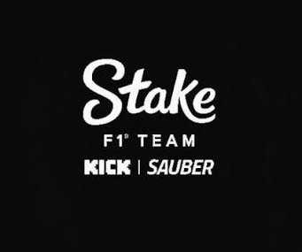

Los orígenes de Sauber
El equipo Sauber fue fundado por Peter Sauber y llegó a la Fórmula 1 en 1993. Durante sus primeros años se destacó por su trabajo técnico y por ayudar al desarrollo de jóvenes pilotos.
La etapa con BMW
Entre 2006 y 2009 el equipo compitió como BMW Sauber. En este periodo consiguió sus mejores resultados, incluyendo su primera victoria en el Gran Premio de Canadá de 2008 con Robert Kubica.
Regreso de Sauber
Después de la salida de BMW de la Fórmula 1, el equipo volvió a competir bajo el nombre Sauber. Posteriormente pasó por diferentes acuerdos de patrocinio y asociaciones, manteniéndose como una de las estructuras más antiguas de la parrilla.
Alfa Romeo
Desde 2018 el equipo comenzó a utilizar el nombre Alfa Romeo como parte de una asociación comercial. Durante esta etapa compitieron pilotos como Kimi Räikkönen, Antonio Giovinazzi, Valtteri Bottas y Zhou Guanyu.
Stake F1 Team
En 2024 y 2025 el equipo compitió bajo el nombre Stake F1 Team como consecuencia de las restricciones de patrocinio y del proceso de transición hacia su nuevo proyecto en Fórmula 1.
La llegada de Audi
El proyecto dio un paso importante con la llegada de Audi como nuevo propietario. Desde 2026 la estructura compite como Audi Revolut F1 Team, iniciando una nueva etapa con una identidad completamente alemana.
Legado en la Fórmula 1
Sauber ha tenido una trayectoria marcada por la formación de pilotos, la innovación técnica y diferentes asociaciones con grandes fabricantes. Su evolución hacia Audi representa uno de los cambios más importantes de su historia.